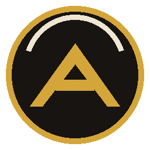

Contame tu ELO, civ, rival y mapaEn buildorderguide.com abrí un build → exportá/copiá el JSON (formato RTS Overlay) y pegalo acá, o importá archivos .json.
Creá la key en console.anthropic.com (API Keys). Se guarda cifrada en esta PC.
Para Ollama: el modelo tiene que soportar tools (qwen2.5, llama3.1, mistral-nemo…). Máquina remota por Tailscale: http://IP:11434/v1
| Servicio | Límite gratis | Ojo |
|---|---|---|
| Groq | 30 pedidos/min · 1.000/día por modelo | límite por organización |
| OpenRouter | 20/min · 50/día (1.000/día con 10 USD cargados) | pueden registrar prompts |
| NVIDIA NIM | 40/min · 10.000/día por modelo | pide programa de desarrolladores |
| Google Gemini | según AI Studio | el plan gratis puede usar tus prompts |
| Mistral | 10 USD/mes en créditos | pueden entrenar con tus prompts (se puede desactivar) |
Cada pregunta al coach hace ~4-6 llamadas a la API (extracción + herramientas + respuesta): 50 pedidos/día ≈ 10 preguntas. Los modelos chicos usan peor las herramientas y se equivocan más que Claude. Fuente: dev.to/tariqnasser (oct-2026). Verificá nombres de modelos y límites en el panel de cada servicio.
Formato Electron: F9, Alt+Q, Ctrl+Shift+C, num5… Si el juego ya usa la tecla, elegí otra.
Lee tu partida en curso desde el perfil público de AoE2 (servicio comunitario aoe2companion) y completa civs y mapa. Si no hay partida o está apagado, la app funciona igual: lo que escribas vos siempre manda.
Qué sale de tu PC: tus preguntas y notas relevantes van al proveedor de IA que elegiste; el texto de las respuestas va a Microsoft si usás la voz Edge (SAPI es local); tu id de perfil va a aoe2companion sólo si activás la partida automática.
Funciones nuevas que todavía no probamos en partidas reales. Apagadas, la app funciona igual que la v0.11.
Stats y árboles: SiegeEngineers/aoe2techtree. Builds: CraftySalamander/rtsbuilds (Hera, Morley Games, DauT…) + tus imports. Se sincronizan al abrir la app. En la carpeta de datos podés agregar builds (.json) y notas (.md).
Proyecto de fans, de código abierto y sin fines comerciales, hecho por curiosidad sobre lo que se puede construir con IA. Código, versiones y explicación completa en github.com/Mdatas/sancho-panza (licencia no comercial, ver LICENSE). Datos del juego: SiegeEngineers/aoe2techtree (MIT). Build orders: CraftySalamander/rtsbuilds (GPL-3.0). Imágenes de mapas: wikis Liquipedia y Fandom.
Age of Empires II: Definitive Edition © Microsoft Corporation. Sancho Panza · Age of Empires 2 Fan Companion was created under Microsoft's "Game Content Usage Rules" using assets from Age of Empires II. It is not endorsed by or affiliated with Microsoft. github.com/Mdatas/sancho-panza · LICENSE